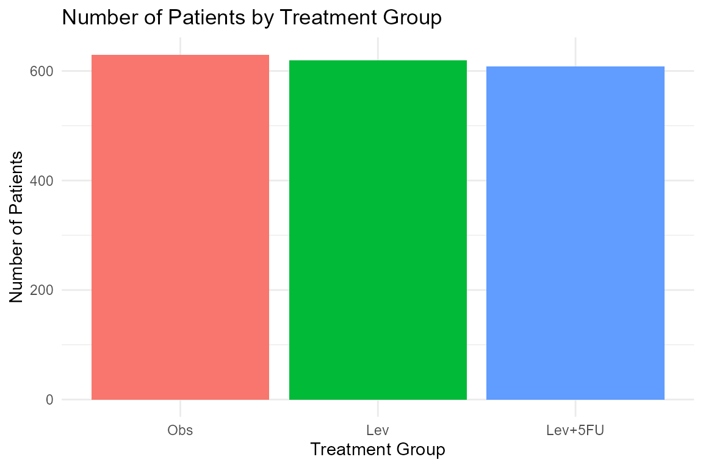

ForCausality: A Curated Collection of Causal Inference Datasets and Tools
Source:vignettes/ForCausality_vignette.Rmd
ForCausality_vignette.Rmd
library(ForCausality)
library(ggplot2)
library(dplyr)
#>
#> Attaching package: 'dplyr'
#> The following objects are masked from 'package:stats':
#>
#> filter, lag
#> The following objects are masked from 'package:base':
#>
#> intersect, setdiff, setequal, unionIntroduction
The ForCausality package provides a curated and
comprehensive collection of datasets designed for causal
inference research. It brings together data from diverse
domains such as clinical trials, cancer studies, epidemiological
surveys, environmental exposures, and health-related observational
studies.
The package includes a wide range of data types, covering treatment outcomes, risk factors, survival data, case-control studies, and exposure assessments. These datasets enable researchers and students to perform causal analysis, risk evaluation, and advanced statistical modeling, supporting both applied work and methodological development in causal inference.
Dataset Suffixes
Each dataset in the ForCausality package uses a
suffix to denote the type of R object:
-
_df: A data frame
Example Datasets
Below are selected example datasets included in the
ForCausality package:
Colon_df: Chemotherapy for Stage B/C colon cancerStroke_df: Fictional ischemic stroke data case control data with risk factors, exposures and confoundersPph_df: An external control trial of treatments for post-partum hemorrhage
Data Visualization with Colon Data
# Summarize the number of patients per treatment group
colon_summary <- Colon_df %>%
group_by(rx) %>%
summarise(count = n())
# Create a simple bar chart
ggplot(colon_summary, aes(x = rx, y = count, fill = rx)) +
geom_bar(stat = "identity") +
labs(
title = "Number of Patients by Treatment Group",
x = "Treatment Group",
y = "Number of Patients"
) +
theme_minimal() +
guides(fill = "none") # Hide the legend since x-axis already shows groups
Conclusion
The ForCausality package provides a well-curated
collection of datasets specifically tailored for causal
inference research. It integrates data from clinical trials,
cancer studies, epidemiological surveys, environmental exposures, and
health-related observational studies.
By offering structured and documented datasets, the package facilitates causal analysis, risk assessment, and advanced statistical modeling, serving as a valuable resource for researchers, educators, and students interested in causal inference.
For detailed information and full documentation of each dataset, please refer to the reference manual and help files included within the package.